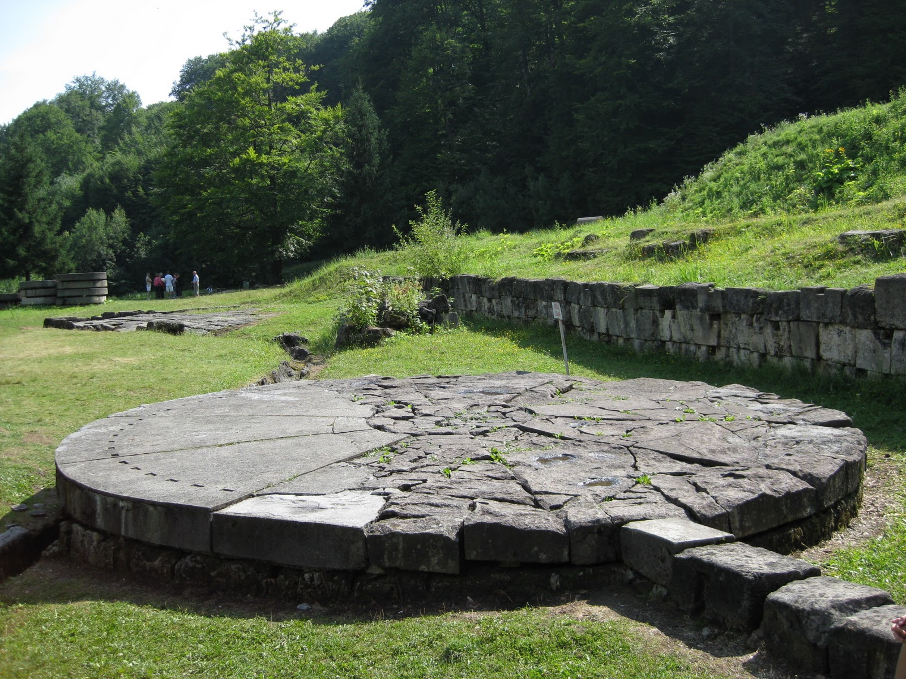
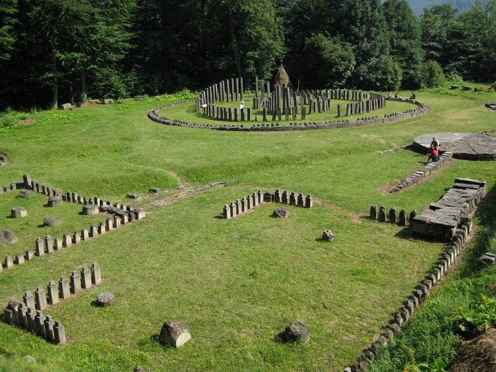

{kind=link}
{kind=link}
{kind=link}
{kind=link}
.jpg){kind=link}
{kind=link}
{kind=link}
{kind=link}
{kind=link}




Apariția proprietății private a determinat diferențierea socială după avere, care a condus la stratificarea societății dacice și la apariția claselor sociale: tarabostes (pileati) și comati. Primii reprezentau aristocrația militară și sacerdotală, iar ceilalți producătorii liberi, marea masă a populației (agricultori, meșteșugari).Stratificarea socială a fost însoțită de apariția primelor triburi și uniuni de triburi, conduse de șefi militari. Fiecare trib stăpânea un teritoriu cu o așezare mare, fortificată numită "dava", având rol de centru administrativ.Dovezile arheologice, precum și izvoarele narative, atestă existența unor puternice uniuni de triburi conduse de "basilei" (regi).
Astfel, în sec. al IV-lea î. Hr. este atestată uniunea de triburi condusă de "rex Histrianorum", care se opune sciților. Mai târziu, Alexandru Macedon înfrânge o uniune de triburi din nordul Dunării la 335 î. Hr. Între 300 î. Hr. și 292 î. Hr. se desfășoară confruntările dintre uniunea de triburi din centrul Munteniei condusă de Dromichaetes, cu reședința la Helis, și aceea condusă de Lisimach, care este luat prizonier. Tot în sec. III î. Hr. este menționată, intr-o inscripție de la Histria o uniune de triburi din sudul Moldovei condusă de Zalmodegikos.
În sec. I î. Hr., societatea geto-dacă trece printr-un proces amplu de modernizare, care a condus la apariția statului dac centralizat, care era o monarhie militară. Primul rege dac a fost Burebista (82-44 î. Hr.). Acesta a unit triburile geto-dace, prin diplomație și lupte, cu ajutorul lui Deceneu (preot) și a creat un stat puternic, cu centrul la Sarmizegetusa Regia, în Munții Orăștie. Sub Burebista, statul dac a atins cea mai mare întindere, limitele sale situându-se,potrivit lui Strabon, la N, în Carpații Păduroși,la V, la Dunărea Mijlocie și actuala Slovacie, la S în Munții Haemus (Balcani) iar la E la gurile Bugului și la Marea Neagră. În anul 48 î. Hr. întreprinde o campanie la sudul Dunării, în Pen. Balcanică. Asigurându-și granițele, Burebista s-a implicat în războiul civil dintre Caesar și Pompei, ajutându-l pe Pompei. Caesar, învingător, a organizat o expediție de pedepsire a lui Burebista, care însă a fost întreruptă prin moartea lui Caesar în 44 î. Hr., urmată la scurt timp de moartea lui Burebista
O dată cu moartea lui Burebista, statul dac, slab centralizat, s-a dezmembrat rapid în patru, apoi cinci, organizări politice. În inima statului lui Burebista, în zona Munților Orăștie, Deceneu, mare preot în timpul lui Burebista, a preluat puterea. El a fost succedat de Comosicus, de Scorilo, si apoi de Diurpaneus. Acesta a făcut o incursiune în provincia Moesia în iarna 85-86 d. Hr., împotriva romanilor, care îl înfrâng. În celelalte provincii, sunt atestați Coson, rege în nordul Munteniei, amestecat în războiul civil roman din perioada lui Octavian Augustus; Cotiso, rege în Banat, care face incursiuni la sudul Dunării; Dicomes, rege în centrul și sudul Moldovei, care susține pe Marc Antoniu în lupta de la Actium; și Roles, rege în Dobrogea, care se aliază cu romanii împotriva lui Dapix și Zyraxes, în iarna 28-29 d. Hr
Decebal (87 – 106 d. Hr.) reface unitatea statului dac, pe un teritoriu mai mic decât statul lui Burebista, însă mai centralizat și mai puternic. Dacia s-a aflat la apogeul puterii sale sub regele Decebal, cuprinzând Transilvania, Banatul, Oltenia, centrul și sudul Moldovei, noul stat era mai puternic și mai bine organizat. Progresele înregistrate în acest timp de societatea dacică erau multiple și importante: o populație numeroasă și grupată în jurul multor dave în care pulsa o vie activitate economică, legături comerciale cu lumea greco-romană, o cultură înfloritoare cu puternice elemente originale.
Istoricul roman Dio Cassius a făcut regelui dac următorul portret elogios:
„Era foarte priceput în ale războiului și iscusit la faptă, știind să aleagă prilejul pentru a-l ataca pe dușman și a se retrage la timp. Abil în a întinde curse, era viteaz în luptă, știind a se folosi cu dibăcie de o victorie și a scăpa cu bine dintr-o înfrângere, pentru care lucru el a fost mult timp un potrivnic de temut al romanilor.”